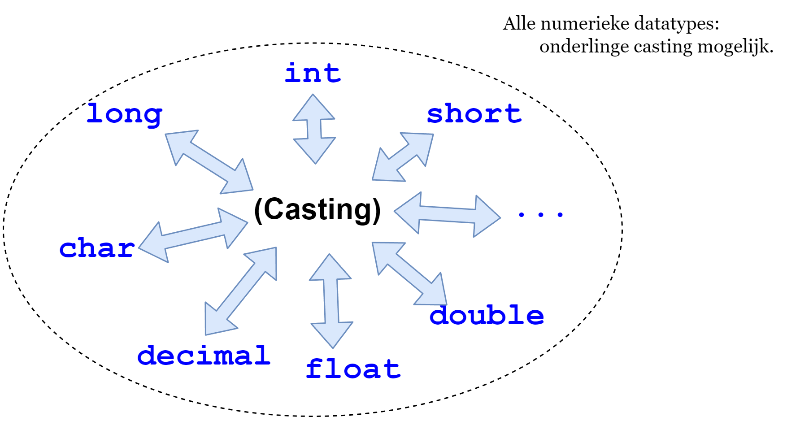
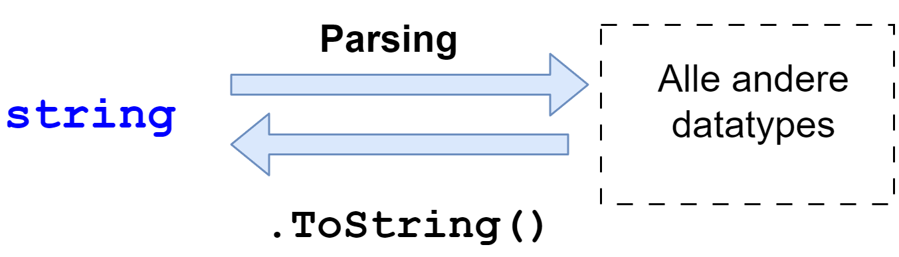
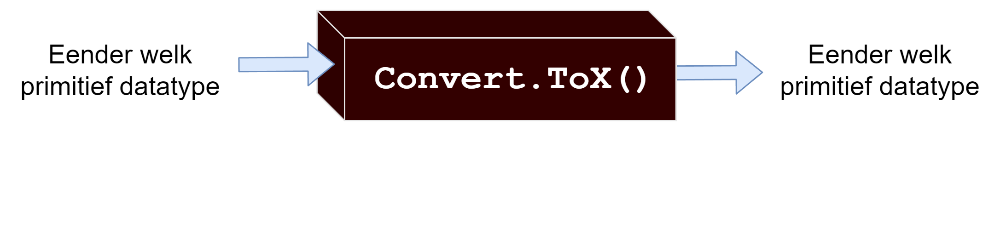
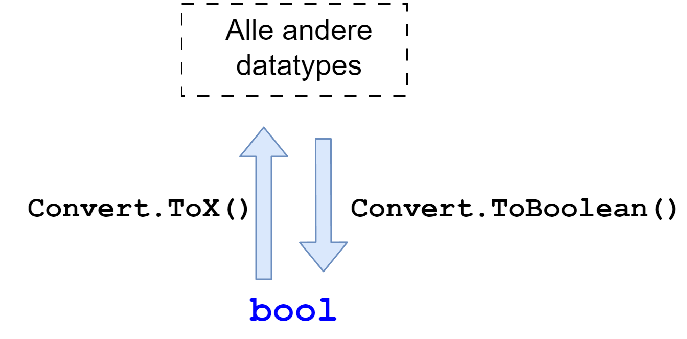
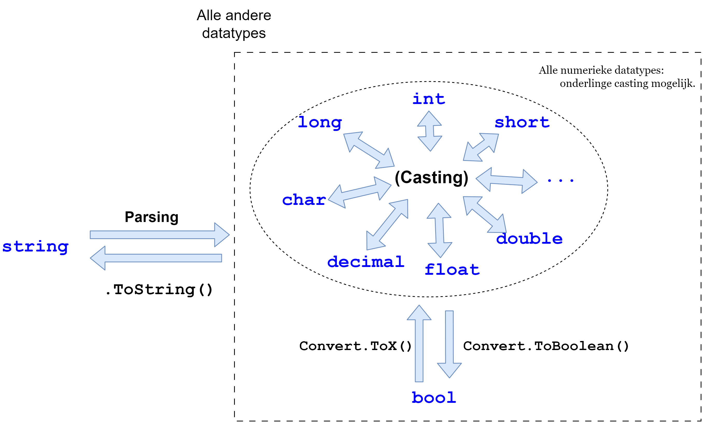

23 Werken met data
Aah, Data, een geliefkoosd personage uit Star Trek. Maar daar ga ik het niet over hebben. Het wordt tijd dat we onze werkkledij aantrekken en ons echt vuil gaan maken.
De wereld draait op data, en dus ook de meeste applicaties die wij gaan schrijven. We hebben al gezien dat C# met verschillende datatypes werkt. Maar wat gebeurt er als we de inhoud van twee verschillende datatypes willen combineren?! In Star Trek resulteerde dat 50% van de tijd in een aanval van de Borg, 20% van de tijd van de Klingons en in de overige 30% in een oersaaie aflevering (Star Wars for life!). Ahum, sorry. I got carried away.
Laten we eens onderzoeken hoe we data van ‘vorm’ kunnen veranderen.
May the force be with you! Euh, ik bedoel: Make it so!
23.1 Appelen en peren
Wanneer je de waarde van een variabele wilt toekennen aan een variabele van een ander type mag dit niet zomaar. Volgende code zal bijvoorbeeld een dikke foutboodschap geven:
int leeftijd = 4.3;Je kan geen appelen in peren veranderen zonder magie: in het geval van C# zal je moeten converteren of casten.
Dit kan op 3 manieren:
- Via casting: de (klassieke) manier die ook werkt in veel andere programmeertalen.
- Via de Convert. bibliotheek van .NET.
- Via parsing : Deze manier is enkel bruikbaar om strings om te zetten naar andere datatypes.
23.2 Casting
Het is onmogelijk om een kommagetal aan een geheel getal toe te wijzen zonder dat er informatie verloren zal gaan. Toch willen we dit soms doen. Van zodra we een numerieke variabele van het ene type willen toekennen aan een variabele van een ander numeriek type en er dataverlies zal plaatsvinden dan moeten we aan casting doen.

23.2.1 Wat is casting
Casting heb je nodig om een variabele van een bepaald type voor een ander type te laten doorgaan. Stel dat je een complexe berekening hebt waar je werkt met verschillende datatypes. Door te casten voorkom je dat je vreemde resultaten krijgt. Je gaat namelijk bepaalde types even als andere types gebruiken.
Het is belangrijk in te zien dat het casten van een variabele naar een ander type enkel een gevolg heeft tijdens het uitwerken van de expressie waarbinnen je werkt. De variabele in het geheugen zal voor eeuwig en altijd het type zijn waarin het origineel gedeclareerd werd. Je kan dus nooit het datatype van een variabele veranderen!
Casting duid je aan door voor de variabele of literal het datatype tussen haakjes te plaatsen naar wat het omgezet moet worden:
int mijngetal = (int)3.5;of
double kommagetal = 13.8;
int kommaNietWelkom = (int)kommagetal;Door casting te gebruiken zeg je eigenlijk aan de compiler 2 zaken:
- Volgende variabele die van het type
doubleis, moet aan deze variabele van het typeinttoegekend worden. - Ik besef dat hierbij data verloren kan gaan (het deel na de komma), maar zet de variabele toch maar om naar het nieuwe type. “Ik draag de volledige verantwoordelijkheid voor de gevolgen hiervan verderop in het programma.”
Je dient enkel aan casting te doen wanneer je aan narrowing doet. Bij narrowing gaan we een datatype omzetten naar een ander datatype dat een verlies aan data met zich zal meebrengen.
Het is een voorzorgsmaatregel om te voorkomen dat we de compiler later verwijten dat hij belangrijke gegevens heeft verloren tijdens de omzetting. Door casting te gebruiken, geven we aan dat we de compiler niet de schuld zullen geven van dit dataverlies.
23.2.2 Narrowing
Casting doe je wanneer je een variabele wilt toekennen aan een andere variabele van een ander type dat daar eigenlijk niet inpast zonder dataverlies. We moeten dan aan narrowing doen, letterlijk het versmallen van de data.
Bekijk eens het volgende voorbeeld:
double hoofdMeting;
int secundaireMeting;
hoofdMeting = 20.4;
secundaireMeting = hoofdMeting;Dit zal niet gaan. Je probeert namelijk een waarde van het type double in een variabele van het type int te steken. Dat gaat enkel als je informatie weggooit (namelijk het gedeelte na de komma). Je moet aan narrowing doen.
Dit gaat enkel als je expliciet aan de compiler zegt: het is goed, je mag informatie weggooien, ik begrijp dat en zal er rekening mee houden. Dit proces van narrowing noemen we casting.
En je lost dit op door voor de variabele die tijdelijk dienst moet doen als een ander type, het nieuwe type, tussen ronde haakjes te typen, als volgt:
double hoofdMeting;
int secundaireMeting;
hoofdMeting = 20.4;
secundaireMeting = (int)hoofdMeting;Het resultaat in secundaireMeting zal 20 zijn (alles na de komma wordt weggegooid bij casting van een double naar een int ).
Merk op dat hoofdMeting nooit van datatype is veranderd; enkel de inhoud ervan (20.4) werd eruit gehaald, omgezet (“gecast”) naar 20 en dan aan secundaireMeting toegewezen dat enkel int aanvaardt.
23.2.3 Narrowing in de praktijk
Stel dat tempGisteren en tempVandaag van het type int zijn, maar dat we nu de gemiddelde temperatuur willen weten. De formule voor gemiddelde temperatuur over 2 dagen is:
int tempGemiddeld = (tempGisteren + tempVandaag)/2;Test dit eens met de waarden 20 en 25. Wat zou je verwachten als resultaat? Inderdaad: 22,5 (omdat (20+25)/2 = 22.5) . Nochtans krijg je 22 op scherm te zien en zal de variabele tempGemiddeld ook effectief de waarde 22 bewaren en niet 22.5.
Het probleem is dat het gemiddelde van 2 getallen niet noodzakelijk een geheel getal is. Echter, omdat de expressie enkel integers bevat (tempGisteren, tempVandaag en de literal 2) zal ook het resultaat een int zijn. In dit geval wordt alles na de komma gewoon weggegooid, vandaar de uitkomst. Dit is narrowing.
Hoe krijgen we de correctere uitslag te zien? Eens testen wat er gebeurt als we tempGemiddeld als double declareren:
double tempGemiddeld = (tempGisteren + tempVandaag) / 2;Als we dit testen zal nog steeds de waarde 22.0 aan tempGemiddeld toegewezen worden. De expressie rechts van de toekenning bevat nog steeds enkel integers en de computer zal dus ook de berekening en het resultaat als integer beschouwen, ongeacht dat deze in een double moet gezet worden.
We moeten dus ook de rechterkant van de toekenning als double beschouwen. We doen dit, zoals eerder vermeld, door middel van casting, als volgt:
double tempGemiddeld = ((double)tempGisteren + (double)tempVandaag) / 2;Nu zal tempGemiddeld wel de waarde 22.5 bevatten.
Er zijn ook andere oplossingen die het gewenste resultaat geven, namelijk:
(tempGisteren + tempVandaag)/2.0;
((double)(tempGisteren + tempVandaag))/2;
((double)tempGisteren + tempVandaag)/2;
(tempGisteren + (double)tempVandaag)/2;Let echter op dat niet alle oplossingen bij dit soort oefeningen steeds dezelfde resultaten geeft. Goed testen is de boodschap en nadenken over de volgorde van berekeningen en wat het datatype van ieder tussenresultaat zal zijn. Laten we dat eens analyseren bij voorgaande 4 voorbeelden:
- Eerst tellen we twee integers op, wat dus een nieuwe integer geeft, die we vervolgens delen door een
double, wat dus eendoubleals resultaat geeft. - Eerst tellen we twee integers op, wat weer een integer geeft, vervolgens zetten we dit resultaat om naar een
doubleen delen dit door eenintwat dus eendoublegeeft. - Eerst zetten
tempGisterenom naar eendouble. Vervolgens tellen we eendoublemet eenintop, wat een double als tussenresultaat geeft. Dit delen we dan door eenintwat eendoublefinaal geeft. - Hetzelfde als de vorige stap, maar nu zetten we eerst
tempVandaagom naar eendouble.
Merk op dat er een subtiel verschil is tussen volgende 2 lijnen code:
(double)(tempGisteren + tempVandaag) / 2; //geeft 22.5
(double)((tempGisteren + tempVandaag) / 2); //geeft 22In het eerste zullen we het resultaat van de som naar double omzetten. In het tweede, door de volgorde van berekeningen door de haakjes, zullen we de casting pas doen na de deling en zal dus 22 in plaats van 22.5 als resultaat geven.
23.2.4 Widening
Casting is niet nodig als je aan widening doet: een kleiner type in een groter type steken (met groter/kleiner wordt de geheugengrootte van het datatype bedoeld), als volgt:
int hoofdMeting;
double secundaireMeting;
hoofdMeting = 20;
secundaireMeting = hoofdMeting; //secundaireMeting krijgt 20.0Deze code zal zonder problemen werken: secundaireMeting zal de waarde 20.0 bevatten. De inhoud van hoofdMeting wordt verbreed naar een double, eenvoudigweg door er een kommagetal van te maken.
Er gaat geen inhoud verloren echter. Je hoeft dus niet expliciet de casting-notatie zoals (double)hoofdMeting te doen, de computer ziet zelf dat hij de inhoud van hoofdMeting zonder dataverlies kan toekennen aan secundaireMeting en is dus niet bang dat hij later aangeklaagd zal worden.
Merk op dat je perfect casting hier mag gebruiken, maar daar de conversie impliciet zonder problemen kan plaatsvinden hoeft dit dus niet. Deze code is echter even juist (en soms een veilige gewoonte om te doen, better safe than sorry):
secundaireMeting = (double) hoofdMeting;23.3 Parsing en .ToString()
Naast casting bestaat er ook nog parsing.
Parsing wordt gebruikt om tekst(string) naar een ander datatype om te zetten (op voorwaarde dat dit kan). Ieder ingebouwd datatype in C# heeft een .Parse() methode die je kan aanroepen om strings om te zetten naar het gewenste type.
Voorbeeld van parsing:
int numVal = Int32.Parse("-105");
Console.WriteLine(numVal);Gebruik parsing enkel wanneer je:
- een
stringhebt waarvan je weet dat deze altijd van een specifieke vorm zal zijn die omgezet kan worden naar een ander datatype, bv. eenint, dan kan jeInt32.Parse()gebruiken. - input van de gebruiker vraagt (bv. via
Console.ReadLine) en niet 100% zeker bent dat deze een getal zal bevatten, gebruik danInt32.TryParse()(meer info in de appendix).
De omgekeerde weg: eender welk datatype omzetten naar een string, doe je met de ToString-methode die ieder datatype ingebouwd heeft. Deze methode wordt automatisch aangeroepen wanneer je een variabele van een ander datatype in een string wilt steken, inclusief wanneer je deze in een Console.WriteLine()-statement gebruikt. Toch kan het handig zijn te weten dat je deze methode ook manueel kan aanroepen:
int getal = 5;
string getalAlsString = getal.ToString();
23.4 Conversie
Casting en parsing zijn de ‘oldschool’ manieren van data omzetten die vooral zeer nuttig is daar deze compacte code geeft en ook werkt in andere C#-gerelateerde programmeertalen zoals C, C++ en Java.
Echter, .NET heeft ook ingebouwde conversie-methoden die je kunnen helpen om data van het ene type naar het andere te brengen. Het nadeel is dat ze iets meer typwerk (en dus meer code) vereisen dan bij casting én dat het geheel een zwarte doos is waarvan je niet weet wat er juist gebeurt. Je zal dus niet weten of er aan parsing of casting wordt gedaan. Het is leuk om te gebruiken, maar je moet wel weten wat je doet.

Al deze methoden zitten binnen de Convert-bibliotheek van .NET. Hou er wel rekening mee dat deze manier van werken iets meer processorkracht vraagt dan casting. In applicaties waar je dus véél data moet omzetten, kan dit een verschil maken (denk aan een game die 60 keer per seconde moet berekenen of een object geraakt wordt door een kogel).
Het gebruik hiervan is zeer eenvoudig. Enkele voorbeelden:
int getal = Convert.ToInt32(3.2); //double to int
double anderGetal = Convert.ToDouble(5); //int to double
bool isWaar = Convert.ToBoolean(1); //int to bool
int leeftijd = Convert.ToInt32("19"); //string to int
int andereLeeftijd = Convert.ToInt32(anderGetal); //double to intJe plaatst tussen de ronde haakjes de variabele of literal die je wenst te converteren naar een ander type. Merk op dat naar een int converteren met .ToInt32() moet gebeuren. Om naar een short te converteren is dit met behulp van .ToInt16().
De conversie zal zelf zo goed mogelijk de data omzetten en dus indien nodig widening of narrowing toepassen. Zeker bij het omzetten van een string naar een ander type kijk je best steeds de documentatie na om te weten wat er intern juist zal gebeuren.1
Convert.ToBoolean verdient extra aandacht: Wanneer je een getal, eender welk, aan deze methode meegeeft zal deze altijd naar True geconverteerd worden.
Enkel indien je 0 (als int) of 0.0 (als double) ingeeft, dan krijg je False. In quasi alle andere gevallen krijg je True.
Omgekeerd, een bool naar een int converteren zal enkel werken met de respectievelijke Convert.ToInt32() methode én dus niet via casting.

Lees zeker de volgende sectie omtrent afronden, want de Convert.ToX-methoden zullen je soms verrassen wanneer je bijvoorbeeld een double naar een int omzet.
23.5 Casting, conversie of parsing?
Toegegeven, het is verleidelijk om vanaf nu alles met behulp van de Convert.To-methoden te doen. Het is immers eenvoudiger en je hoeft niet na te denken over narrowing of widening. Besef echter dat andere talen mogelijk enkel parsing en casting ondersteunen en dat je dus best deze methoden ook onder de knie hebt.
Volgende tabel geeft een overzicht van wanneer je best welke methode gebruikt:

Je kan alle conversie-mogelijkheden nalezen op msdn.microsoft.com/system.convert.↩︎